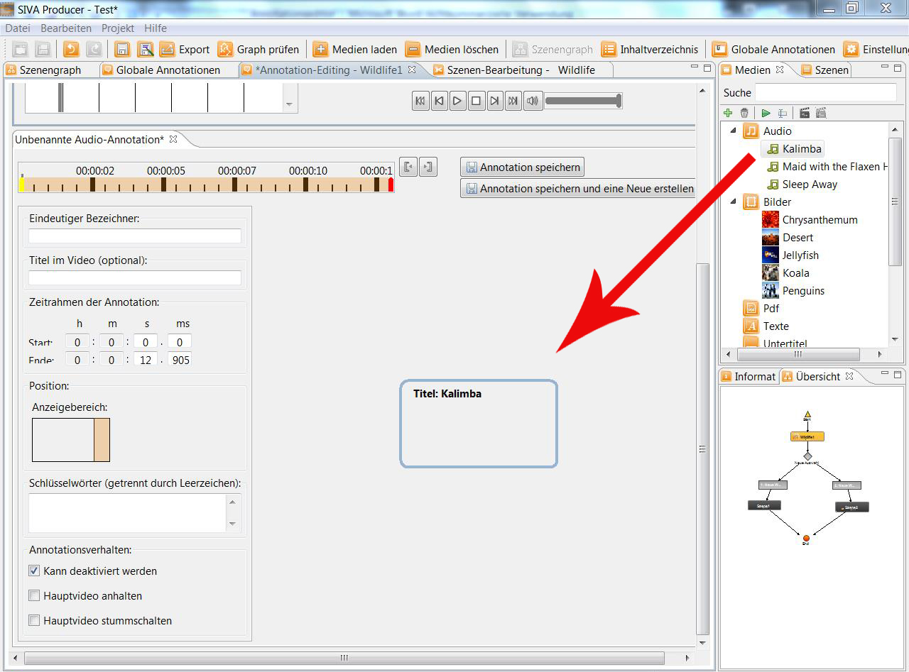
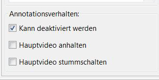

An audio-annnotation cannot be edited. It can be dragged via drag and drop into the editing window, after having been loaded into
the media-repository and you have created a new audio-annotation.

Now you can define the starting and ending point of the reproduction and a name for the annotation can be chosen.
Furthermore you can activate or deactivate further settings for the reproduction of the audio file. The sound of the main video can
be silenced.

For further details see: "Create annotations"